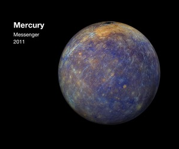
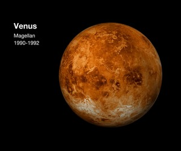
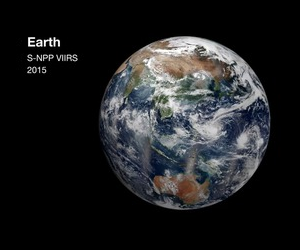
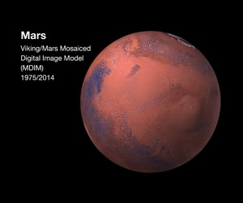
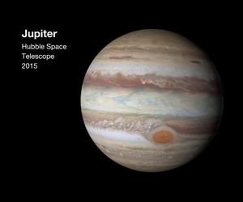
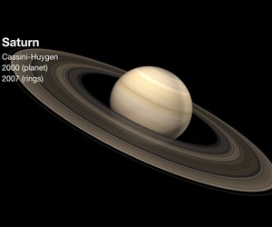
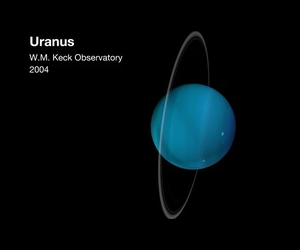
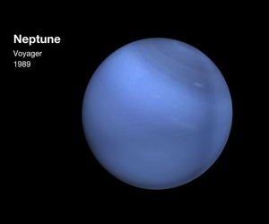

|
Let´s talk about
|


|
|---|
Wikipedia (2020,June 13). Solar System. Retrieved from Wikipedia:Solar System

Image retrieved from: Our Solar System - NASA |
MercuryMercury (0.4 AU from the Sun) is the closest planet to the Sun and on average, all seven other planets.The smallest planet in the Solar System , Mercury has no natural satellites. Besides impact craters, its only known geological features are lobed ridges or rupes that were probably produced by a period of contraction early in its history. Mercury's very tenuous atmosphere consists of atoms blasted off its surface by the solar wind. Its relatively large iron core and thin mantle have not yet been adequately explained. Hypotheses include that its outer layers were stripped off by a giant impact, or that it was prevented from fully accreting by the young Sun's energy. Wikipedia (2020,June 13). Solar System. Retrieved from Wikipedia:Solar System |
Image retrieved from: Our Solar System - NASA |
VenusVenus (0.7 AU from the Sun) is close in size to Earth (0.815 M⊕) and, like Earth, has a thick silicate mantle around an iron core, a substantial atmosphere, and evidence of internal geological activity. It is much drier than Earth, and its atmosphere is ninety times as dense. Venus has no natural satellites. It is the hottest planet, with surface temperatures over 400 °C (752 °F), most likely due to the amount of greenhouse gases in the atmosphere. No definitive evidence of current geological activity has been detected on Venus, but it has no magnetic field that would prevent depletion of its substantial atmosphere, which suggests that its atmosphere is being replenished by volcanic eruptions. Wikipedia (2020,June 13). Solar System. Retrieved from Wikipedia:Solar System |
Image retrieved from: Our Solar System - NASA |
EarthEarth (1 AU from the Sun) is the largest and densest of the inner planets, the only one known to have current geological activity, and the only place where life is known to exist. Its liquid hydrosphere is unique among the terrestrial planets, and it is the only planet where plate tectonics has been observed. Earth's atmosphere is radically different from those of the other planets, having been altered by the presence of life to contain 21% free oxygen. It has one natural satellite, the Moon, the only large satellite of a terrestrial planet in the Solar System. Wikipedia (2020,June 13). Solar System. Retrieved from Wikipedia:Solar System |
Image retrieved from: Our Solar System - NASA |
MarsMars (1.5 AU from the Sun) is smaller than Earth and Venus (0.107 M⊕). It has an atmosphere of mostly carbon dioxide with a surface pressure of 6.1 millibars (roughly 0.6% of that of Earth). Its surface, peppered with vast volcanoes, such as Olympus Mons, and rift valleys, such as Valles Marineris, shows geological activity that may have persisted until as recently as 2 million years ago.[86] Its red colour comes from iron oxide (rust) in its soil. Mars has two tiny natural satellites (Deimos and Phobos) thought to be either captured asteroids,[88] or ejected debris from a massive impact early in Mars's history. Wikipedia (2020,June 13). Solar System. Retrieved from Wikipedia:Solar System |
Image retrieved from: Our Solar System - NASA |
JupiterJupiter (5.2 AU), at 318 M⊕, is 2.5 times the mass of all the other planets put together. It is composed largely of hydrogen and helium. Jupiter's strong internal heat creates semi-permanent features in its atmosphere, such as cloud bands and the Great Red Spot. Jupiter has 79 known satellites. The four largest, Ganymede, Callisto, Io, and Europa, show similarities to the terrestrial planets, such as volcanism and internal heating. Ganymede, the largest satellite in the Solar System, is larger than Mercury. Wikipedia (2020,June 13). Solar System. Retrieved from Wikipedia:Solar System |
Image retrieved from: Our Solar System - NASA |
SaturnSaturn (9.5 AU), distinguished by its extensive ring system, has several similarities to Jupiter, such as its atmospheric composition and magnetosphere. Although Saturn has 60% of Jupiter's volume, it is less than a third as massive, at 95 M⊕. Saturn is the only planet of the Solar System that is less dense than water.[100] The rings of Saturn are made up of small ice and rock particles. Saturn has 82 confirmed satellites composed largely of ice. Two of these, Titan and Enceladus, show signs of geological activity.Titan, the second-largest moon in the Solar System, is larger than Mercury and the only satellite in the Solar System with a substantial atmosphere. Wikipedia (2020,June 13). Solar System. Retrieved from Wikipedia:Solar System |
Image retrieved from: Our Solar System - NASA |
UranusUranus (19.2 AU), at 14 M⊕, is the lightest of the outer planets. Uniquely among the planets, it orbits the Sun on its side; its axial tilt is over ninety degrees to the ecliptic. It has a much colder core than the other giant planets and radiates very little heat into space. Uranus has 27 known satellites, the largest ones being Titania, Oberon, Umbriel, Ariel, and Miranda. Wikipedia (2020,June 13). Solar System. Retrieved from Wikipedia:Solar System |
Image retrieved from: Our Solar System - NASA |
NeptuneNeptune (30.1 AU), though slightly smaller than Uranus, is more massive (17 M⊕) and hence more dense. It radiates more internal heat, but not as much as Jupiter or Saturn.[103] Neptune has 14 known satellites. The largest, Triton, is geologically active, with geysers of liquid nitrogen.[104] Triton is the only large satellite with a retrograde orbit. Neptune is accompanied in its orbit by several minor planets, termed Neptune trojans, that are in 1:1 resonance with it. Wikipedia (2020,June 13). Solar System. Retrieved from Wikipedia:Solar System |